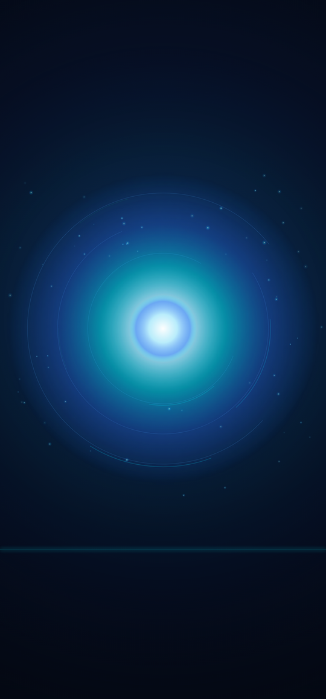

El orb animado de verdad, como app propia de fondo de pantalla: aparece en la lista de Live wallpapers del teléfono, sin internet, sin sensores y se detiene solo cuando no lo miras.
Después: Ajustes → Fondo de pantalla y estilo → Live wallpapers → Alma · el orb de AccentBridges → Aplicar. Tiene su botón Configurar para velocidad, brillo y tamaño.
Imagen fija 1440 x 3088, el tamaño exacto de tu S22 Ultra. Cero gasto de batería y se pone sin instalar nada.

Toca Día o Noche. Después lo pones desde Galería.
El video solo se puede poner animado en la pantalla de bloqueo, y ahí Samsung lo hace solo, también sin apps.
Para el video: Galería → abre el archivo → menú ⋮ → Establecer como fondo de pantalla → Bloqueo.